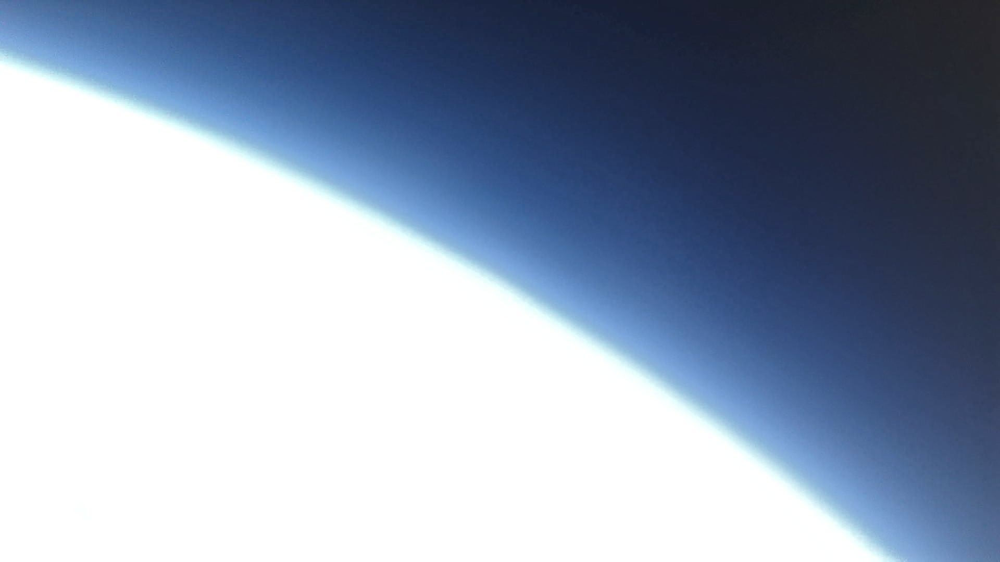

HAB-1. Flown and recovered.
- Peak altitude
- 19,625 m
- Flight time
- 2 h 04 min
- Landed
- 62.7 km NE
- Coldest outside
- −55.0 °C
From the HAB-1 cameras, 31 October 2026. Edited.
Our first stratospheric balloon carried the Boscon flight computer, telemetry radio and an onboard language model to 19,625 m above Solapur, and came home 62.7 km away. This is the flight, told from its own logs.
Released at 12:37 IST. Burst at 19.6 km seventy minutes later. Under its parachute for fifty-four minutes. Down 62.7 km north-east of the pad, where our live predictor, re-run from every packet in flight, had said it would come down.
Every number from the payload's own logs.
- Release
- 12:37:06 IST
- Burst
- 19,624.8 m
- Mean ascent
- 4.54 m/s
- Touchdown
- 14:41:45 IST
- Flight time
- 124.7 min
- Landing
- 62.7 km at 42°
- Live prediction after burst
- 990 m
- Farthest from the pad
- 65.0 km
- Lowest outside pressure
- 55.14 hPa
- Coldest outside sensor
- −55.02 °C
- Inside the box
- 6.4 to 48.5 °C
- Touchdown speed
- about 2.7 m/s
- Records logged
- 51,622
- Language model answers
- 411
07:07:06 UTC ±1 s. Inside the NOTAM window of 05:30 to 11:30 UTC.
MeasuredGPS, 13:47:23 IST, 37.5 km from the pad. Predicted 30.1 km; the 300-flight Monte Carlo's lowest 5% was 26.8 km.
Measured4.28 to 4.91 m/s in every 2 km band, no fall with height. Fill target 5.0 m/s.
Computed09:11:45 UTC ±1 s, from the outside pressure going flat.
Measured70.3 min up, 54.4 min down. NOTAM allowed 130 min; predicted about 123 min.
Computed18.132536 N, 76.226952 E. Pre-flight prediction 43.2 km at 27° for a 12:00 IST release.
ComputedMedian miss of its 166 landing estimates after burst; closest 35 m at 14:21:18 IST, last 1.1 km at loss of signal. The team found the payload 200 to 300 m from its predicted path.
ComputedOf 107.4 km (58 NM) allowed: 42.4 km to spare.
ComputedAbout 5.4% of sea level pressure, 8 s after burst.
MeasuredMS5611 chip temperature at 13:53 IST on the way down, below its −40 °C rated range; it kept reading, CRC-good. The air was colder: the day's GFS gives about −79 °C at 16 to 17 km (model).
MeasuredBMP280. The hottest was on the pad before release.
MeasuredFrom the pressure rise over the last 10 s. Predicted 7.0 m/s.
ComputedFlight computer log lines, each with a CRC. 0 bad.
MeasuredIn flight, above 7 km, on the Pi. Median 10.4 tokens/s.
MeasuredFly it again.
The beacon's GPS at 1 fix a second, drawn in true scale over the terrain, from release to touchdown. Two predictions ride along: the pre-flight run from the morning, and the live prediction the ground station recomputed from every packet in flight. Play it, drag the timeline, or click any chart further down to jump here.
- Altitude, GPS
- none
- Vertical
- none
- Ground speed
- none
- From the pad
- none
- Outside sensor
- none
- Inside box
- none
- Pressure
- none
- Pi SoC
- none
In 3D: drag to turn and tilt all the way round, right-drag or Shift-drag to move, ⌘ or Ctrl and scroll to zoom. In Plan: drag to move. On a phone: two fingers. Orbit spins it for you.
What the payload felt.
Hover a chart to read it; drag across it to zoom, double-click to reset. Click to put the map at that moment. Times are IST. to move every cursor and zoom together.
GPS against the outside barometer on the standard atmosphere. The gap is the real atmosphere: warmer than standard below the tropopause, colder above.
GPS, ±10 s centred difference. Steady climb, a fast fall in thin air, slowing as the air thickens.
How fast the wind carried it, from the same GPS fixes.
Outside: the MS5611 chip's own temperature, in the air but not a calibrated air temperature. Inside: the BMP280 in the box. The Pi's processor for scale.
Log scale. Outside fell from 959.5 hPa on the pad to 55.14 hPa. The inside sensor is rated only to 300 hPa.
Signal strength and signal-to-noise of each packet heard. Gaps are receiver restarts on the ground side.
The atmosphere over Solapur, measured on the way up and down.
Outside sensor on ascent and descent, inside box on ascent.
Balloon drift in 500 m bins (computed). Band: October climatology, where loaded.
Where the wind blew from, degrees. Easterlies low down, westerlies near the top.
What we predicted, and what flew.
The morning of launch, the Boscon HAB predictor flew the balloon 300 times through the GFS forecast and the 50-member ECMWF ensemble. Every one of those flights burst between 26.8 and 32.5 km (5th to 95th percentile). HAB-1 burst at 19.6 km, 18.7 minutes early, and fell more slowly than modelled. After the flight we re-ran the same predictor on the day's winds to see which mattered.
| Release IST | Burst | Landing | Monte Carlo p95 |
|---|---|---|---|
| 11:00 | 30.1 km, T+89 min | 41.7 km at 23° | 43.6 km |
| 12:00 | 30.1 km, T+89 min | 43.2 km at 27° | 44.7 km |
| 13:00 | 30.1 km, T+89 min | 43.6 km at 31° | 45.2 km |
| 14:00 | 30.1 km, T+89 min | 42.5 km at 34° | 44.5 km |
| 12:37 flown | 19.6 km, T+70 min | 62.7 km at 42° | none |
SondeHub's Tawhiri, given the same ascent, burst and descent, landed 1.4 to 2.9 km from these points.
Flown (white) against the simulations, where loaded.
How typical was the day?
October winds over the Deccan, from the radiosonde and GFS archives the predictor is built on, against the winds HAB-1 drifted through.
Median and middle half of October soundings, against HAB-1's ascent.
Median October temperature against HAB-1's outside sensor on ascent.
A Raspberry Pi 5, sealed in a box, at 19.6 km.
- Processor temperature
- 45.2 to 86.45 °C
- Throttling
- Soft limit from 13:09 IST
- Undervoltage
- Never
- Cameras
- 2 × USB, 3-min clips
- Log write errors
- 0
At or above 80 °C for about 65 minutes. Hottest at 16,061 m, where thin air carries little heat away.
Then clock capping and throttling. Clock between 1,500 and 2,400 MHz.
5 V rail 4.768 to 5.081 V from a 20,000 mAh power bank.
Logitech C270 and Lenovo 300 FHD, 105 clips each, 45 GiB in all.
Everything fsynced at least every 2 s. Nothing overwritten.
Every 10 s for the whole boot, 11:19 to 16:29 IST. Shaded: the Pi reported a temperature limit or throttling in that sample.
The Pi's undervoltage flag never set, at any point of the flight.
A language model, thinking at the edge of space.
Qwen2.5 1.5B ran on the Pi itself, with no link to the ground. It woke at 7 km and worked through eight prompts in turn, each time reading the live sensors first. Every answer was logged with exactly what it was told.
- Answers
- 411
- Median speed
- 10.4 tok/s
- Median answer
- 17.6 s
- Contradictions caught
- 40
- Heat pauses
- 1
- It copied numbers from the sensor text well; it was weaker at arithmetic. One answer called 205.1 hPa "78.5% of the air pressure at sea level"; it is 20.2%.
- Forty times it said "climbing" while the measured phase was "descending". The checker caught all 40 and asked again.
- Its "highest altitude so far" of 20,017 m was the barometric figure, which the sensor text did not label. The GPS peak was 19,625 m. Our mistake, not the model's.
- It answered with the processor at up to 85.9 °C, although it should pause above 78 °C. The pause logic needs checking.
- A full review of all 411 answers against what they were told has not been done.
The view from 19 km.
Three minutes from the Lenovo camera across the burst, graded. The balloon burst 38 s in, above the camera and out of its view.
The Earth is white because the camera clipped it: 80 to 99% of its pixels are at the sensor's ceiling, so no grading can bring ground detail back. The next flight fixes exposure for sunlit ground. The curve in these frames is mostly the lens: at this height the true curvature is about 29 px across the frame (computed, assuming an 85° field of view).
What flying taught us.
- 01
The balloon burst at 19.6 km, not 30.
It climbed steadily at 4.3 to 4.9 m/s to the end, so it was not leaking: it failed suddenly. The cause is not known. The cameras were recording at the moment and are the first place to look.
- 02
It landed 20 km from the morning's prediction, and a few hundred metres from the live one.
The pre-flight run assumed a 30 km burst. The live prediction, recomputed from every packet, moved about 15 km north-east in the 92 s after the burst, to within 1.3 km of the real landing, and then stayed within about a kilometre of it (median 990 m, closest 35 m); the team found the payload 200 to 300 m from its predicted path. Re-run afterwards with the real ascent, burst and descent, the predictor lands 4.1 km from the touchdown, against 22.7 km with the morning's settings.
- 03
The parachute came down slower than modelled.
About 2.7 m/s at touchdown against 7.0 m/s predicted, and 1.6 to 1.9 times slower than the model at every height. That alone moved the landing about 10 km. Balloon remnants or a better parachute coefficient than the 0.75 assumed; not yet separated.
- 04
Something pulled on the payload 35 m above the ground.
At 14:41:29 IST the beacon lost power and rebooted, and the inside sensor's wiring came loose, in the same second. The flight computer and the outside sensor carried on. A tree, a wire or a hard swing; the clips from 14:40:46 IST cover it.
- 05
Thin air is a poor heatsink.
The Pi spent about 65 minutes at or above 80 °C and throttled, but never browned out, never rebooted, and lost no data. The next box needs a thermal path to the outside.
- 06
The cameras were set for the pad, not for the stratosphere.
Auto exposure metered on the dark sky and clipped the sunlit Earth. A fixed exposure set on sunlit ground, a camera tilted 20 to 30° down and a lens hood are the changes; untested.
- 07
The radio link held to 64.8 km.
Last packet at 14:34:30 IST, 2,109 m up, at −126 dBm and −14.3 dB SNR. The Pi logged the beacon on a wire the whole way, so the record has no gap.
- 08
The outside sensor measured itself, not the air.
It read 4 °C warmer than the day's GFS air near the ground and 45 °C warmer at 19.5 km. The chip is warmed by sunlight and by the box. A shielded air-temperature probe is needed for real temperatures.
- 09
A small model can report from the edge of space.
Copying facts from sensors worked. Reasoning about them did not always. A checker that compares each answer with the measurement is worth keeping.
Most of the 210 video clips are not reviewed. The cause of the burst and of the event before touchdown are not known. Recovery details (what it landed on, its condition) are not in any log. The last minutes of data after power-off did not reach the card.
